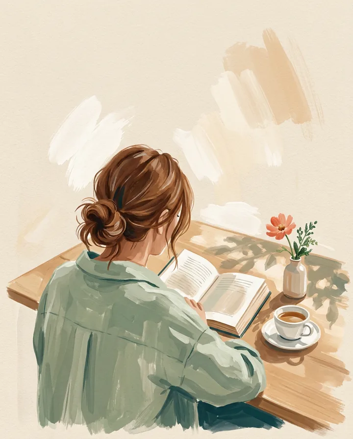
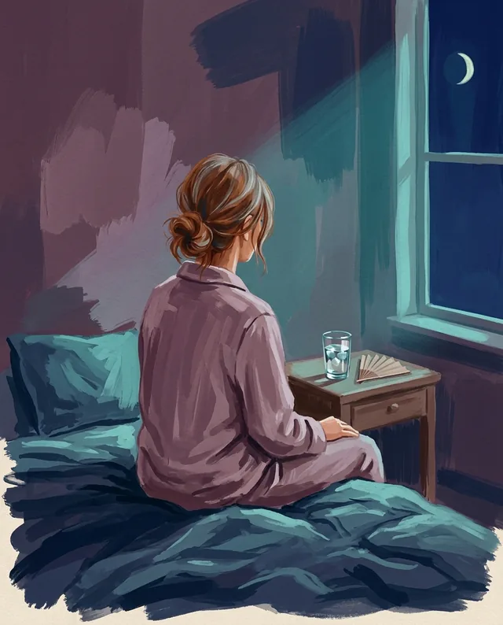
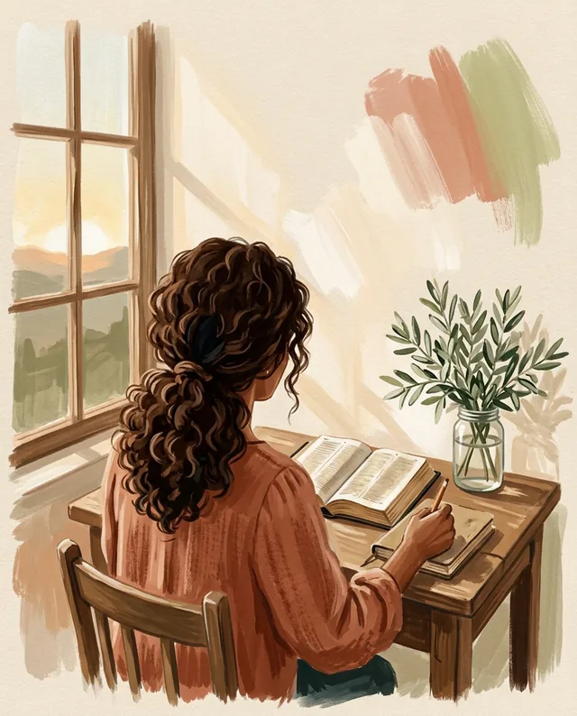
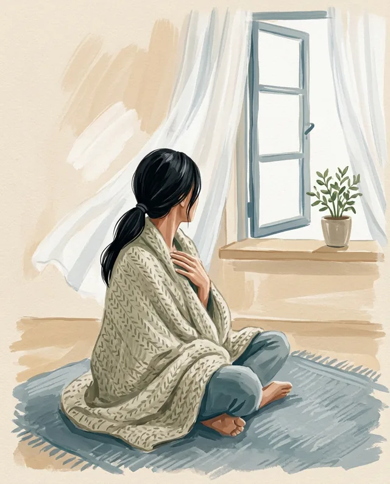
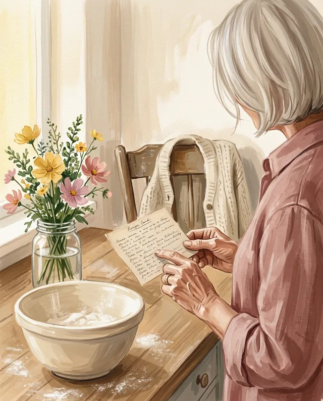

Hannah Grace
Healing Bible Study for Women
A 6-week, Scripture-based journey to restore a broken heart, renew your mind and walk in wholeness again.
Gentle, practical workbooks and Bible studies for women walking through anxiety, grief, faith and perimenopause.


A 6-week, Scripture-based journey to restore a broken heart, renew your mind and walk in wholeness again.
A 10-minute daily reset that calms your nervous system, with step-by-step practices you can actually do.

For the 3 a.m. wakeups, the brain fog and the feelings nobody warned you about. By Claire Harmon.
Meet Claire
Hannah Grace
Bible studies and prayer journals for women whose faith feels far away, written like a friend sitting across the table.

Maya Chen
Workbooks on the vagus nerve and somatic healing, with clear steps, real science and nothing you need an app for.

Clara Bennett
Guided journals and keepsake books for daughters grieving their mother. Her first books are on the way.
Claire Harmon
Honest, jargon-free workbooks for the emotional side of perimenopause: anxiety, brain fog, sleep and rage.
bloom /bluːm/ verb
To open slowly, after a long and hard season.
Every Bloom book is a companion for one specific season, written so you can work through it at your own pace.
Each chapter ends with something to do today, in minutes, not hours.
Prompts, trackers and lined pages, so the book becomes yours.
Scripture quoted exactly, research named by author and year. Never "studies show".
Every Bloom title links straight to Amazon, in print and Kindle.
Shop the books